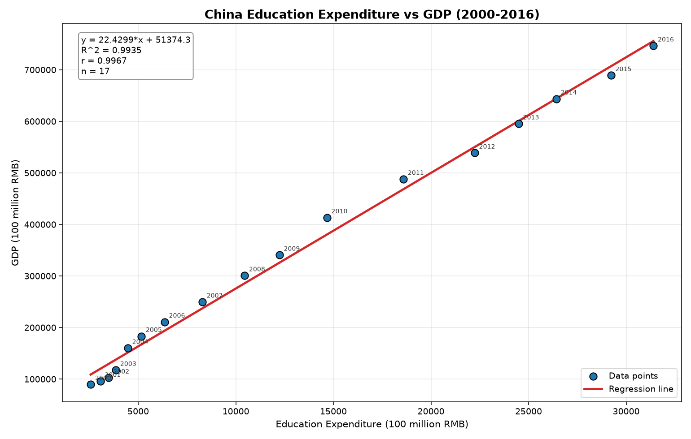
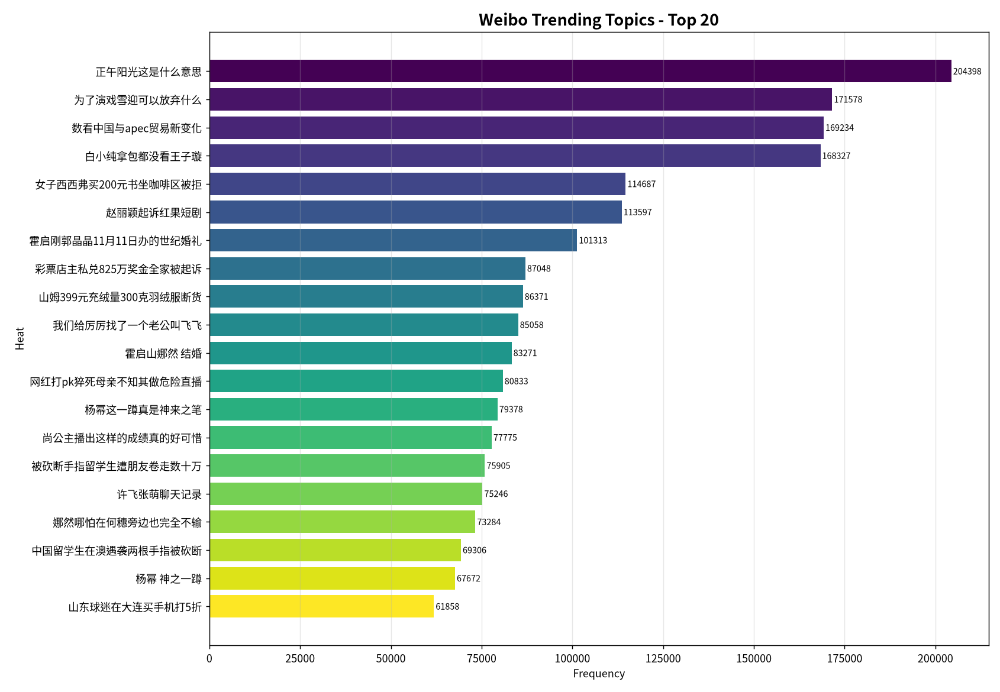
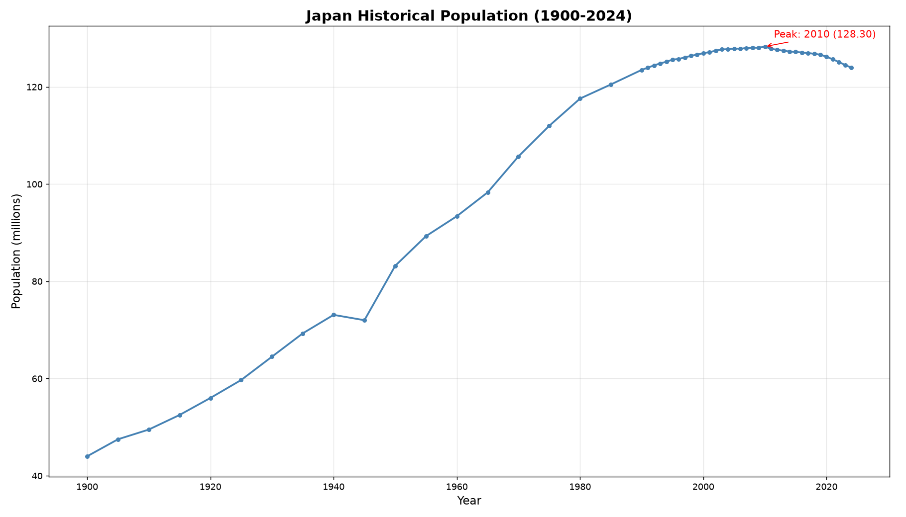
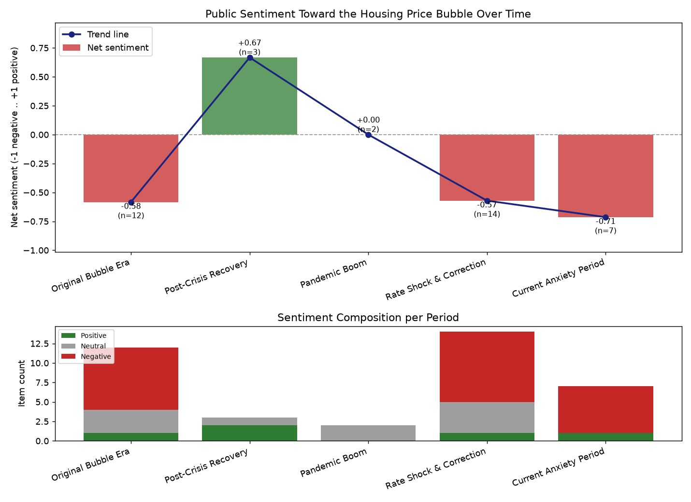
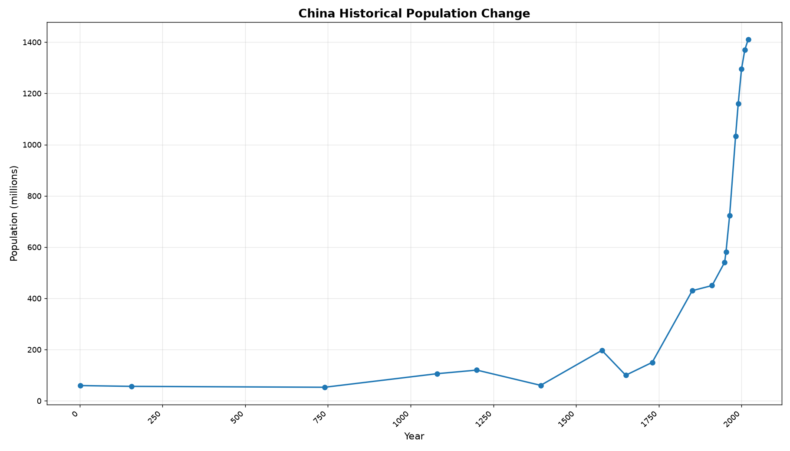

B2 Q6 · US health vs GDP (show this)


B1 Q6 · China edu vs GDP (from-scratch twin)


B2 Q5 · Weibo top-20

B2 Q14 · GDP vs life expectancy


B2 Q3 · Japan population


B1 Q0 · Housing sentiment


B1 Q3 · China population